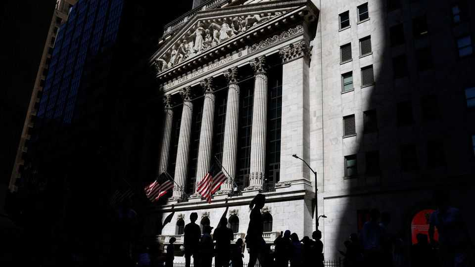
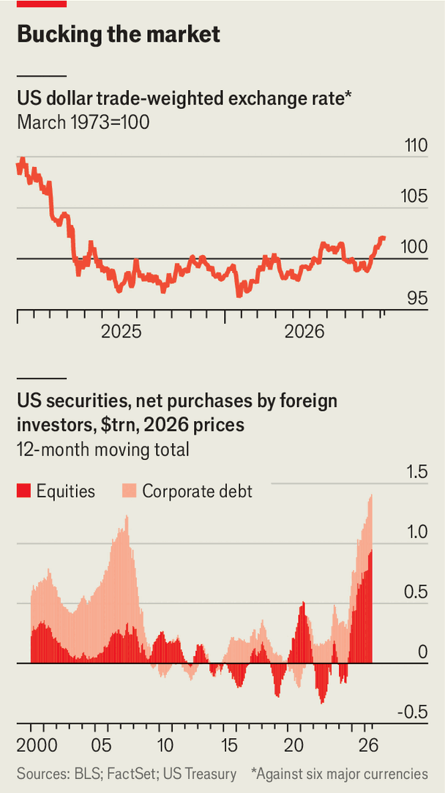

The bond market sell-off is helping the dollar
But the strength of the greenback is not as reliable as in the past

Oct 8th 2026
NO FORECAST IS ever a complete consensus in financial markets. But some get close. At the end of 2025 the idea that the dollar would weaken was one. Dollar bulls were few. Most big investment banks and asset-management firms made bearish predictions. So did The Economist: in February we suggested that the greenback might extend last year’s miserable run, as its safe-haven status continued to fade.
So far, so wrong. The DXY index, which measures the dollar against a small basket of rich-world currencies, has risen by 4% in 2026 (see chart). It is at its highest since Donald Trump began his trade world war in April last year. Several factors, not least global enthusiasm for American stocks, have helped frustrate the dollar doomsters. But these factors will not support the greenback for ever.

The movements of other currencies are part of the explanation. Investors have soured on the euro, in particular. It has slid from $1.17 to around $1.12, owing to growing worries about political and fiscal stability in Europe’s currency union. The yield on French ten-year government bonds has risen from 3.5% to 4.9% this year amid fears of fiscal mayhem, and is now around 1.3-1.4 percentage points above the German equivalent. Investors dumping euros have only so many places to go: the dollar is an obvious choice (the euro is down against sterling and the yen, too).
Another reason for the dollar’s rally is darkly ironic: the rise in energy prices caused by America’s war with Iran. In the past high oil prices typically weakened the greenback. Oil was something that America bought from abroad, and although crude is priced in dollars, many of those it handed over to foreign sellers would eventually be converted into some other currency. Since America became a net energy exporter in the late 2010s, thanks to the shale-fracking boom, this mechanism has gone into reverse. Pricey petrol and diesel may be a political headache for Mr Trump’s Republican Party a month before midterm elections, but they are a salve for the dollar.
A deeper source of the dollar’s strength is the American economy, which continues to surprise even optimists. Late last year economists expected growth of between 1.6% and 1.9%, at an annualised rate, in each quarter this year. In fact growth hit 2.5% in the first quarter and 2.2% in the second, fuelled by household consumption and business investment in infrastructure for artificial intelligence. The third quarter may have been stronger yet: the Atlanta Fed’s “nowcast” points to 3.7%.
A hot economy may force the Federal Reserve to keep raising interest rates, which makes owning Treasury bonds and other interest-bearing American assets more lucrative. In the year to July foreign buyers bought a net $450bn or so of American corporate debt, the most in any such period in nearly 20 years even after adjusting for inflation. Foreigners are hungrier still for American equities: in the same 12 months they purchased a net $900bn-worth of American stocks and investment-fund units. That is a record for any 12-month stretch—and 80% above an earlier peak in 2021.
The problem for the dollar is that these sources of strength are narrower than in the past. Historically America’s currency rallied both when the country’s economy was going strong and when the world, even including America, was falling to pieces. Stephen Jen, a currency strategist and investor, dubbed this the “dollar smile”.
Now the smile is more of a lopsided smirk. Although the dollar’s movement against the euro shows that its appeal as a safe haven remains, this matters much less than the allure of America’s risk assets. Should those assets disappoint—if, say, the boom turns out to be a bubble and pops—return-chasing investors will dump them, and the dollar, as quickly as they snapped them up. Currency traders had better get used to bigger mood swings. ■